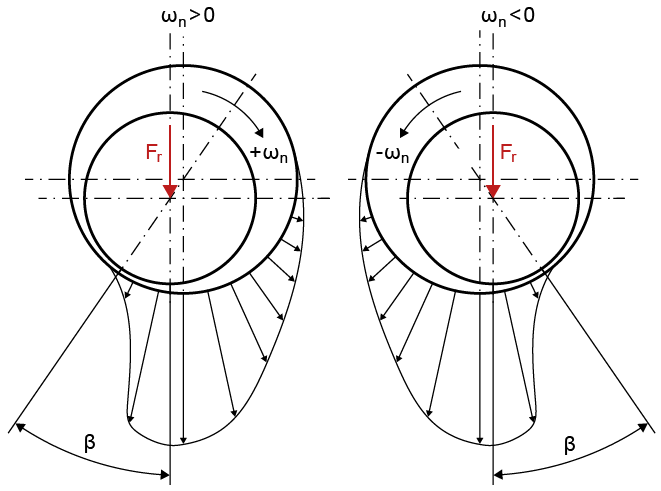

|
|
|


流体动压滑动轴承
流体动压滑动轴承（参见"流体动压滑动轴承"章）可以用流体动压滑动轴承单元来表示。除了输入公称宽度 B、偏位角 β 和直径间隙 Pd 之外，您还可以输入径向刚度 cr。在可用间隙被完全使用后，这会影响轴。您还可以输入阻尼率 dr 来评估受迫振动（参见"受迫振动"章）。

滑动轴承被实现为一种非定位轴承，它可以传递径向力但不能传递倾覆力矩。如果特定配置产生倾覆力矩，而滑动轴承在实践中必须能够传递这些力矩，则必须添加一个支承以确保建模正确。
Hydrodynamic Plain Journal Bearings
Hydrodynamic plain journal bearings (see chapter Hydrodynamic Plain Journal Bearings) can be represented with the hydrodynamic plain journal bearing element. In addition to entering the nominal width B, the attitude angle β and the diametral clearance Pd, you can also input the radial stiffness cr. This affects the shaft after the available clearance has been fully used. You can also enter a damping rate dr to evaluate the forced vibrations (see chapter Forced vibrations).
The plain bearing is implemented as a non-locating bearing which can transmit radial forces but no tilting moments. If a particular configuration results in tilting moments, which the plain bearing must be able to transmit in practice, you must add in a support to ensure the modeling is correct.